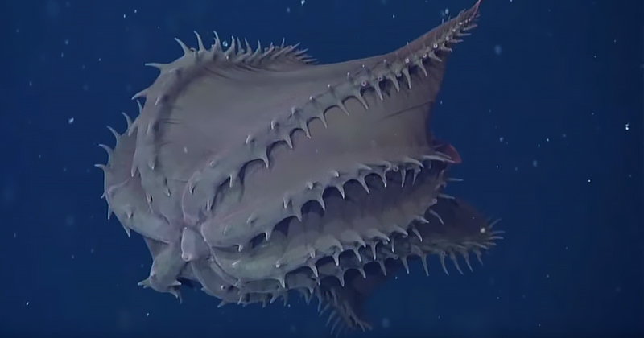
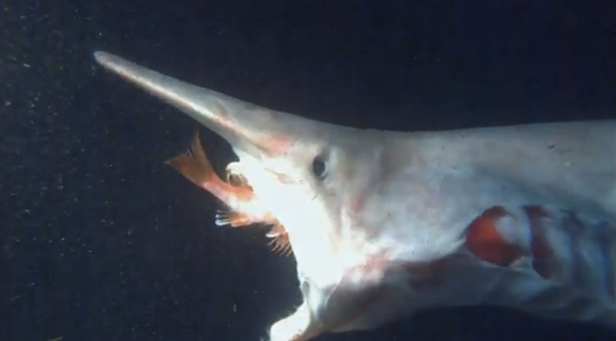

| Table of Contents |
|---|
The ocean is a large body of salt water that covers 71% of our Earth’s surface with an average depth of 3,688 metres (12,100 feet). Within the deepest parts of the ocean lie creatures beyond comprehension. From giant squids to translucent fish, here are some of the horrors that lurk in the deepest areas of our Earth.
The Vampire Squid, or Vampyroteuthis infernalis, were discovered by Carl Chun, a zoologist, around 1898-1899 during the Valdivia Expidition. Chun was determined to confirm that there was life 550 metres below the surface and his suspicions were correct. His expedition was funded by the Gesellschaft Deutscher Naturforscher und Ärzte (Society of German Natural Scientists and Physicians) and he was given the S.S. Valdivia as well as laboratory equipment to analyze and preserve organisms.
The journey began in Hamburg, Germany, to Edinburg, to the west coast of Africa, and finally the deep areas of the Indian and Antartic Ocean.
The vampire squid lives in the depths of subtropic and tropic oceans at depths ranging from 300-3,000m and climates ranging from 2-6°C. Since they live in the deeper parts of the ocean, vampire squids prefer to habitate darker areas where light can’t penetrate.
Despite its name, the vampire squid doesn’t consume blood, in fact, vampire squids are detritivores, which means that they consume dead organisms. They eat something called “marine snow”, which a mixture of feces, remains, and snot that floats around in the ocean. The feces come from small crustaceans such as krill, and the remains typically come from dead animals and algae that lived in shallow waters, then eventually sunk to the bottom of the ocean. The snot comes from larvacean, organisms that filter and consume marine snow. The vampire squid does not use extreme measures to collect its food, in fact, they peacefully float around in darkness until their food comes to them.
The vampire squid current known predators are deep sea fish, whales, and sea lions. In order to defend themselves, vampire squids will turn their cloak-like, webbed tentacles inside out to conceal themselves since the inside of their “cloak” is black, matching the dark waters. Another thing about vampire squids is that they do not produce ink, since ink would be redundant in their environment, instead the vampire squid produces bioluminescent mucus that blinds its enemies in the dark water.
The humpback anglerfish was discovered in 1833 after a female anglerfish was washed up and found on the shores of Greenland. The creature was then taken to zoologist Johannes Christopher Hagemann Reinhart in Copenhagen, Denmark. Due to its almost perfectly spherical physique, it was known as the footballfish (Himantolophus groenlandicus)for quite a while and it was the first anglerfish known to science according to Ted Pietsch, a systematist and evolutionary biologist, in his book “Oceanic Anglerfishes”.
Like the vampire squid, humpback anglerfish dwell in the deep, dark parts of the ocean. They can be found almost everywhere, especially in South China Sea and the East China Sea. They prefer to live in dark and freezing areas, where sunlight can’t reach them.
The humpback anglerfish’s diet consists of small aquatic animals such as fish, shrimp, small squids, turtles, and sometimes even sea birds. They typically consume these animals when they have already died and sunk to the bottom of the ocean where the humpback anglerfish dwells.
As of now, there are no discovered predators of the humpback anglerfish. However, sharks can, in fact, eat anglerfish in general, but since there aren’t many sharks that live in the same depth as the humpback anglerfish, their chances of being hunted are slim. Some might argue that the humpback anglerfish’s main predator is actually humans since anglerfish are caught and sold in markets as food in Europe.
The goblin shark (Mitsukurina owstoni) was discovered in the waters off of Japan in 1898. The shark was found by shipmaster and naturalist Alan Owston in Sagami Bay. It was then given to Professor Kakichi Mitsukuri at the University of Tokyo.
The goblin shark can be found in every major ocean as well as off the coast of many countries. They prefer to live in dark depths of the ocean ranging from 270-960 metres (890-3,150 feet) below sea level. There is evidence that suggests that these sharks can be found even deeper on the ocean.
The goblin shark’s diet typically consists of fish, rattails, anglerfish, crustaceans, and cephalopods. They hunt by waiting for their prey to come near instead of actively seeking it. This is because goblin sharks are very clumsy and slow. When their prey is close enough, the goblin shark snaps its jaw forward in a fast motion to quickly bite down on its food without it escaping.
There isn't a lot of information about the goblin shark to confirm what its predators are but scientists suspect that blue sharks and other sharks could eat them.
There have been multiple sightings of the bigfin squid (Magnapinna), the earliest of which being in 1988 when the crew of the submersible Nautile found the large squid off the coast of northern Brazil 4,735 metres (15,535 feet) below sea level.
Bigfin squids live deeper than many known squids, so they prefer to live in cold and dark climates. Their deepest depth recorded so far would be 4,735 metres (15,535 feet).
The bigfin squid feeds on fish and crustaceans. They are unable to actively hunt their prey since their environment is so dimly lit, so they use their incredibly long arms to drag themselves across the ocean floor. The second that they feel a moving object in the way, they will snatch it up and holds it as it eats.
Unfortunately, there are no known predators of the bigfin squid since they live incredibly deep in the the ocean.
Sloane’s viperfish (Chauliodus sloani) can be found in many places, primarily in the Atlantic Ocean and western Mediterranean Sea. It was found by naturalist and physician Marcus Elieser Bloch, along with classicist and naturalist Johann Gottlob Theaenus Schneider. They were both well known for their taxonomy for many species of fish.
Sloane’s viperfish vertically migrates, meaning that they move up to shallower waters during the night and then move back down during the day. This means that this viperfish can survive in both cold and slightly warm environments. During the day, they can be found approximately 500-2,500 metres (1,640-8,202 feet) below sea level, and at night, they can be found 600 metres (1970 feet) below.
Sloane’s viperfish uses its abnormally large teeth to grab hold of their prey in the darkness. From observations of the stomach contents of these viperfishes, it is safe to assume that their favourite food is lanterfish, along with algae, fish eggs, and small crustaceans. Viperfish actually have a low metabolism rate which allows them to survive for days without food. This is likely caused by the scarce amount of food found in the deep seas.
Viperfish, in general, are the prey of sharks as well as some species of dolphin.
All image citations can be found here.
Return to top